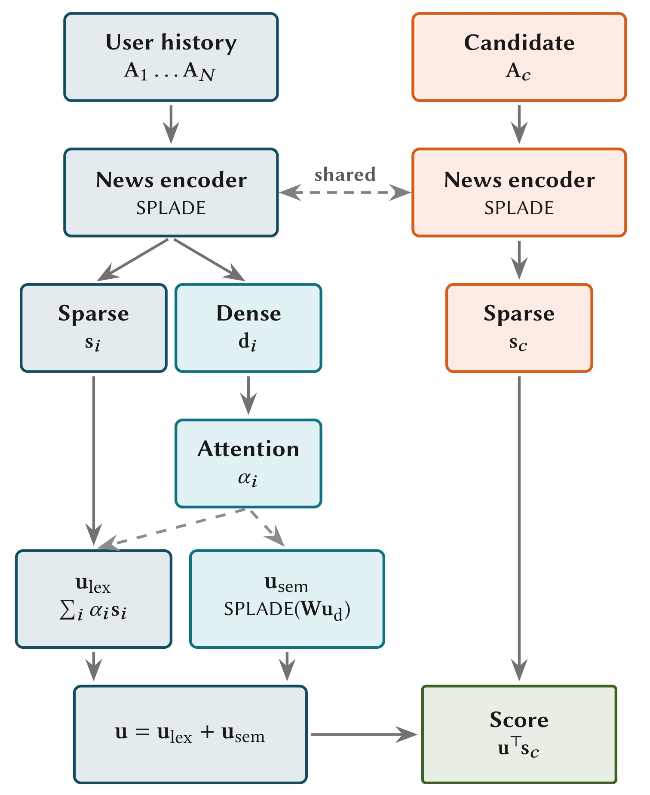
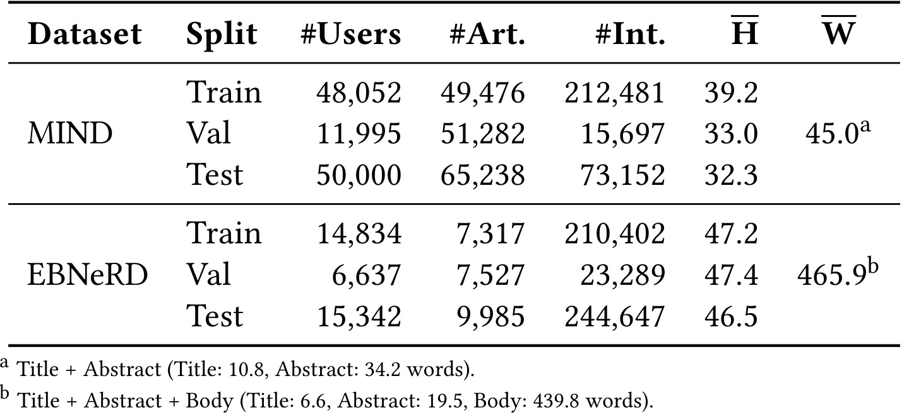
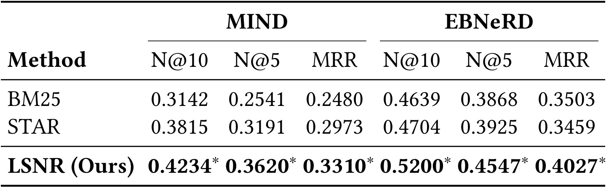
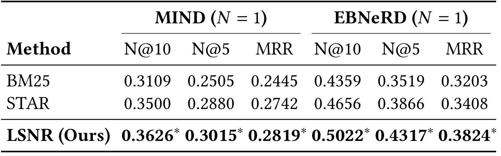
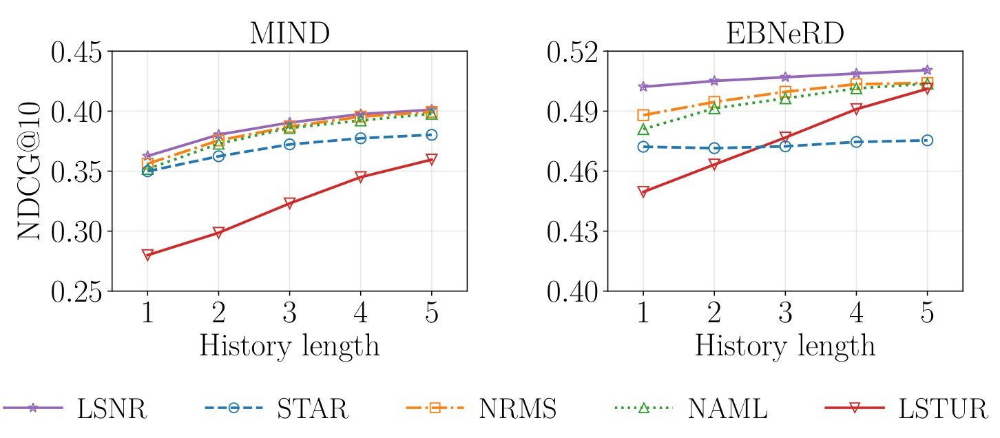
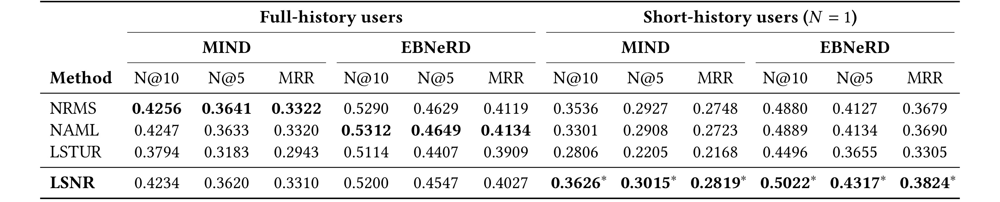
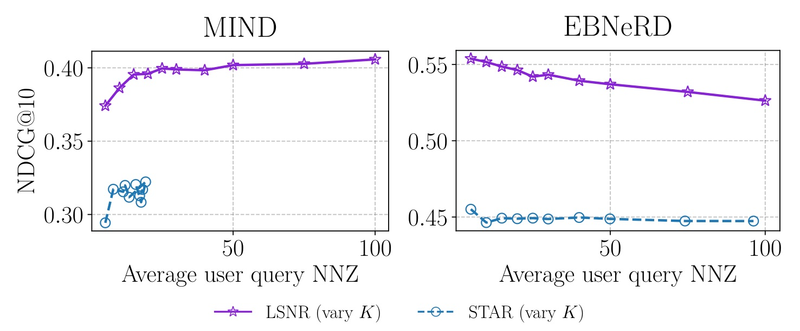
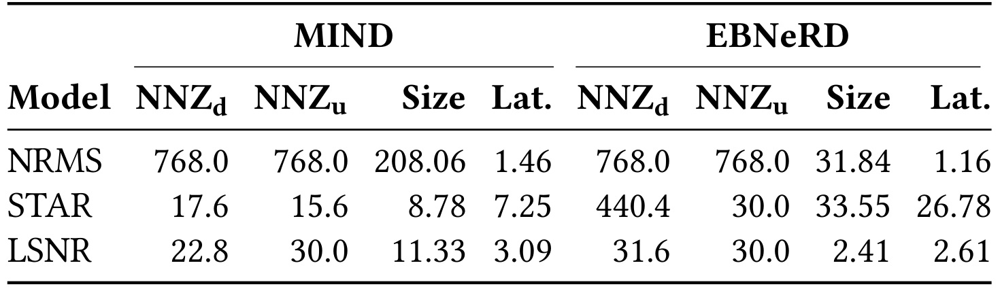
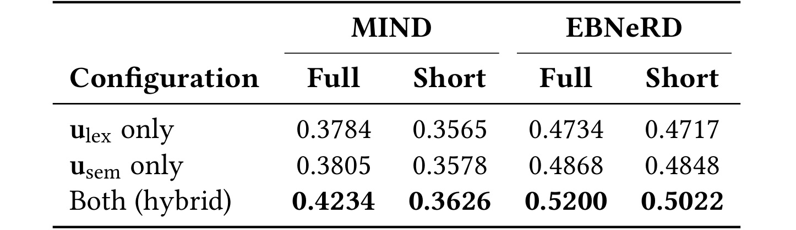
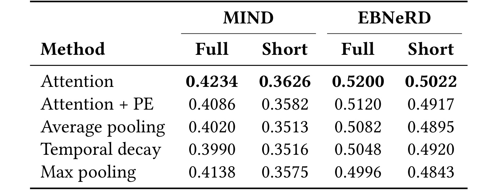

LSNR：以注意力构造稀疏用户画像的新闻推荐
- 论文：LSNR: Learned Sparse News Recommendations with Attentive User Modeling
- 作者：David Vos、Andrew Yates、Maarten de Rijke
- 第一作者机构：阿姆斯特丹大学；合作机构：约翰斯霍普金斯大学
- 首次公开：2026-10-16，arXiv v1；本次精读：2026-10-20
- 论文入口：arXiv:2610.23510
- 代码：learned-sparse-news-recs，当日事实包核验可访问。
- 会议状态：SIGIR-AP 2026 接收；论文标注会议日期为2026年12月13—15日，截至本次精读会议尚未举行。
LSNR由阿姆斯特丹大学与约翰斯霍普金斯大学合作提出，用可学习的文章聚合把新闻阅读历史转换为倒排检索查询。下文围绕双路径用户表示、短历史控制实验和存储与延迟的不同结论展开。
把用户阅读历史拼成一条文本，会把彼此不同的阅读兴趣混成一个查询；新闻文本又会迅速超过语言模型的上下文窗口，迫使模型截断本来有价值的信息。
1. 背景和问题
上述问题表述压缩翻译自论文摘要与引言，指出的是现有稀疏推荐迁移到新闻领域时的具体表示瓶颈。LSNR研究如何把一组文章变成一个可用于倒排检索的用户向量，核心对象是用户编码器，而不是扩大语言模型、生成推荐理由或者设计更复杂的最终排序器。它关心检索阶段，因为这个阶段必须覆盖候选新闻库，又必须在新闻不断发布的条件下反复更新内容表示。
新闻与电影、商品的差别首先来自供给变化。文章的有效生命周期短，新文章上线时往往没有足够交互，依赖稳定物品身份的协同信号很难及时建立。内容编码因此格外重要：只要正文出现，就可以先建立可检索表示。传统神经新闻推荐通常把新闻内容变成稠密向量，再把用户点过的新闻向量通过注意力聚合成用户向量，最后用内积比较。这个架构已经能够区分历史文章的重要性，但每个向量维度缺乏直接词项含义，需要依赖向量索引承载检索。论文尝试把同样的文章粒度建模能力搬到学习型稀疏空间，以保留词表维度与倒排索引的工程形式。
学习型稀疏检索与词频匹配也不同。一个文章向量的维度对应词表里的词，但权重由预训练语言模型学习，允许激活文章没有直接出现、却与内容相关的词。比如购物语句可以扩展出购买相关词，这样就不必等到用户与候选出现完全相同的表达才发生匹配。与此同时，大部分维度为零，查询可以只访问少量活跃词项的倒排链。LSNR继承的是这种兼具词法外观与语义扩展能力的表示，而不是把新闻还原成词袋。论文也提醒，活跃词并不保证都具有可靠语义；某些维度可能成为模型传递排序信号的通道，看得见词并不自动等于解释成立。
现有STAR把历史文章首尾拼接，再像处理普通搜索查询一样编码整条字符串。这个选择在新闻场景引出两个相互关联、却不能混为一谈的问题。第一是内容容量：历史越长，越多文章被挤到窗口之外，长正文会比短标题更早占满窗口。第二是组织方式：即使全部文本都放得下，一次阅读可能反映财经兴趣，另一次可能只是偶然点击，直接拼接没有显式的文章级重要性接口。语言模型可以在内部学习联系，但训练与推理的基本单位仍是一条长查询；文章边界、跨文章互动与不同内容的重要性没有被架构清楚表达。LSNR把这两件事拆开处理，使实验能够检查收益究竟只是多读了内容，还是用户建模本身变好了。
论文给出的结构选择相当克制。每篇新闻先独立编码，不与用户身份绑定，历史新闻和候选新闻共享编码器。文章表示可以缓存一次、被很多读过它的用户复用，线上用户侧再从这些表示构建兴趣。历史稠密向量用于判断哪些文章重要；历史稀疏向量承载直接词项信号；聚合后的稠密兴趣再向词表投影，形成额外的用户层语义扩展。这保留了常见双塔推荐中的文章级聚合接口，也保留了稀疏检索的最终输出形式。方法并没有把用户永久拆成多个兴趣向量，最后仍然是单个稀疏用户向量，多样兴趣是否被均衡保留仍受训练目标与注意力分配影响。
这篇论文值得读的另一个原因是它没有用一个总体数字覆盖所有设定。标准全历史条件下，LSNR在英文MIND上接近最强稠密模型，在丹麦语EBNeRD上仍然落后；历史只剩一篇时优势更明显。作者还专门保留了对稀疏模型不利的效率事实：索引小很多，但稠密HNSW查询更快。因此“稀疏优于稠密”并不是本文能够支持的普遍结论。更准确的研究问题是：在公开新闻基准和给定索引实现上，文章粒度的双路径稀疏画像能否同时提供合理的排序质量、短历史稳健性与较低索引存储成本。
短历史也需要精确定义。论文是在完整训练数据上训练模型，再把测试用户历史截到最近一至五篇，模拟信息稀少的输入。它不等于真正第一次访问的用户，也没有证明没有任何点击时能够个性化。新闻业务中新用户、低频访问者、追踪受限的用户确实经常只有少量可用历史，但这些实际群体还可能存在设备、渠道和内容分布差异；人工截断只控制了可见交互数量。读实验时应把“少量历史输入下表现更好”与“线上所有冷启动人群收益更好”区分开，这决定了如何设计后续验证，也避免给方法贴上超出证据的标签。
最后，论文的研究边界停留在两套公开离线数据与索引微基准。正文没有线上点击率、停留时长或用户满意度实验，也没有跨平台流量验证。注意力机制得到的是相关性学习证据，模型激活的词项得到的是可检查性示例；它们都还没有变成因果解释或者用户可控兴趣管理的实证。因此下文把主结果、条件性优势和作者解释分开记录：数字负责说明在哪个实验条件下发生了变化，机制分析负责提出变化可能来自哪里，局限负责界定尚未回答的部分。
还有一个与新闻业务直接相关的张力是，独立文章编码将成本移到内容侧后，历史更新就不再必须重新处理所有原始文字，但用户聚合仍需随阅读变化重新计算。文章表示可缓存并不等于用户画像永远静态，新增一篇阅读会改变跨文章上下文和注意力分母，原来的文章贡献也可能变化。因此本文真正改变的是计算粒度与复用边界，而不是取消用户端计算。与简单累计词频相比，这保留了适应兴趣变化的学习接口；与每次拼接全部正文相比，则减少重复的语言模型编码。这个区别帮助理解后面相对STAR的速度改进为何出现，同时又为何不能据此推出索引搜索一定比稠密方法快。
2. 方法
2.1 新闻编码器：独立文章表示与辅助稠密信号
每篇文章先经BERT规模的预训练骨干得到逐词上下文向量，再通过一个额外可训练的Transformer层。这里独立指不同文章分开编码，不意味着单篇无限长；解决的是多篇历史竞争同一个窗口的问题。对第一个历史文章与第一百个历史文章使用相同流程，候选文章也共享这套参数。一个分支把每个位置投影到词表空间，随后使用非负激活与对数饱和抑制过大的权重，最后沿文本位置做最大池化：
符号解释：这里的下标 $i$ 表示文章内的词位置，$j$ 表示词表维度，$h_i$ 是额外Transformer层输出，$W_{\mathrm{vocab}}$ 是词表投影矩阵，$s_j$ 是整篇文章对词项 $j$ 的激活。投影与骨干输入词嵌入共享权重，这是标准SPLADE做法。最大池化意味着某个词项只要被任一文本位置强烈支持，就能够保留到文章表示中。另一方面，额外层输出还会做均值池化，产生辅助稠密文章向量 $d$。候选最终检索只需稀疏向量；历史文章则同时使用稠密和稀疏表示。

Figure 1可以沿左右两条链阅读。右侧候选文章编码后直接得到稀疏向量，整个流程不依赖当前用户，因此可以提前建立索引。左侧每篇历史文章同时产生两种表示：稀疏表示保留文章层的词项激活，稠密表示进入注意力模块，决定每次阅读对当前画像的贡献。图中虚线连接说明两个方向共享文章编码器，而不是历史和候选各学一套互不兼容的空间。用户侧下方还有两条内容路径，左边用文章权重聚合已有稀疏词项，右边先把稠密兴趣聚合再投影回词表，两者相加后才与候选做内积。这一点决定了LSNR并非把稠密向量直接与稀疏向量拼接：最终查询和最终候选始终处于同一词表空间，线上服务不必再为稠密分量额外查询一次向量索引。图中的注意力也是共享的，一个文章权重同时影响两个分支，不能把两条路径误读成两套独立兴趣选择器。框架的计算收益依赖文章编码能够预计算和复用；如果部署时每次请求都重新编码全部原文，就失去了论文中用户编码速度改善的主要前提。图里没有展示训练时的稀疏正则，也没有给出候选更新与缓存刷新机制，因此完整系统仍需结合后面的训练和效率设定理解。
文章层的稀疏输出本身已经包含语义扩展，后文“词法路径”并非只汇总原文精确词。原文Table 1的王室消费新闻除了王室、品牌等可直接联想的词，还激活了其他政治和人物相关词。该例子说明输出落在可见词表上，同时也说明不能只挑几个易解释的词就断言整个表示可信。正文进一步用三位用户的词项画像展示可读性，但用户按类目集中程度挑选，这些案例只适合作为机制示意，不能用于估计平均解释质量。
2.2 用户编码器：跨文章注意力与两条稀疏路径
用户历史包含 $N$ 篇文章。模型先让这些文章的稠密向量经过一个Transformer层，使每篇文章在其他历史文章的上下文中重新表示，再用可学习的加性注意力计算权重。默认不加入位置编码，这是后面消融支持的选择，而非假定新闻时间完全没有作用。正文的权重表达如下：
符号解释：此处 $i$ 改为历史文章索引，$\widetilde d_i$ 是跨文章上下文化后的稠密向量，$W_a$、$b_a$ 与查询向量 $q$ 都是学习参数，$\alpha_i$ 非负且总和为一。输入是一组文章向量，输出是每篇文章的权重。权重依赖当前整段历史，但不依赖正在打分的候选，所以同一个用户查询可一次用于很多候选。注意力并不是每个词项单独决定取哪篇文章，一个标量文章权重会作用于该文章的全部稀疏维度。
第一条路径直接聚合文章稀疏向量：
符号解释：$s_i$ 表示第 $i$ 篇文章的SPLADE向量，$u_{\mathrm{lex}}$ 表示词法路径输出。它的非零位置只能来自已有文章稀疏向量的并集，所以每个激活都能沿文章权重追到某些历史文章。这个可追踪关系比把所有文本压成一个查询清晰，但仍不能将其视作对点击原因的因果分解，因为文章向量和注意力都受共同训练影响，词项还可能承担非直观信号。
第二条路径从聚合的稠密用户兴趣产生新的词项：
符号解释：$u_{\mathrm{sem}}$ 是语义路径，沿用文章编码器的词表投影 $W_{\mathrm{vocab}}$ 与同一组文章权重。它可以激活没有被任意一篇文章单独激活的维度，因为先聚合语义再施加非线性，与先把每篇文章映到稀疏空间再线性相加并不等价。第一条路径更直接保留内容贡献，第二条路径允许多篇阅读共同推断潜在主题。最终表示为：
符号解释：$u$ 是最终词表空间用户向量，两个加数维度相同。共享注意力和词表投影意味着相对于对应的单路径结构，双路径融合本身没有再引入一套专用可学习参数。它也没有引入候选条件化的交叉注意力，因此仍适合一次编码用户、多次比较候选的检索范式。单历史时注意力归一化自然只剩一个权重，但稀疏路径和稠密投影路径仍然不同；这解释了为什么单历史条件下双路径消融仍有意义，同时也提醒不能把该条件下所有收益都归于“挑选了更重要的文章”。
2.3 打分和正则：把训练出的画像接回倒排索引
检索使用稀疏内积：
符号解释：$c$ 是候选新闻，$s_c$ 是其稀疏向量，$V$ 是词表。只有用户与新闻共同活跃的词项才贡献分数，倒排系统可以跳过大量零维度。训练阶段还会对新闻向量和最终用户向量施加FLOPS稀疏正则，分别使用新闻系数0.005与用户系数0.0005。正文明确给出正则类型与系数，没有单列完整优化目标公式，因此这里不擅自补写一个未经原文确认的损失函数。系数在验证集上调节，不能直接视为跨数据集的最优部署参数。
推理与训练的区别在于文章编码可移到索引构建和缓存阶段，线上主要处理用户聚合与索引搜索。未剪枝时用户向量平均非零维度在MIND为722、EBNeRD为563，文章只有22.8与31.6；很多文章词项取并集自然让用户向量更密，所以训练时的稀疏并不保证查询已经足够便宜。检索前再保留用户权重最高的若干词项，是独立于训练正则的操作点选择。默认保留三十个词项，但不同数据集对剪枝方向的响应相反，说明词项数量与有效兴趣信号之间没有一条通用的线性关系。
3. 实验结果
3.1 两套小版本数据与两种评测口径
实验使用英文MIND和丹麦语EBNeRD的small版本。官方测试集缺少公开标签，作者把官方验证集用作论文的测试集，并从训练集时间末尾取百分之十作为调参验证集。因此表中的Test是本研究的评估用途，不应理解为提交官方隐藏测试榜的成绩。训练与调参采用时间划分；MIND输入标题加摘要，EBNeRD还包含完整正文，这让两套数据能检验内容长度差异对历史拼接的影响。

Table 3最有解释力的两列是历史长度和文章词数。MIND测试用途数据的平均历史长度为32.3，文章平均45词；EBNeRD为46.5篇与465.9词，后者正文平均439.8词。把这种长文本不断拼接到五百一十二词元窗口，丢失文章和丢失正文会同时出现。表中MIND训练用户为48052，评估用户为50000；EBNeRD训练用户14834，评估用户15342。文章数、用户数与交互数分别统计，不能把交互数直接当成全库候选规模。两个small版本覆盖了不同语言与文本长度，却没有覆盖超大新闻库或多语混合流量；由此得到的存储和延迟比值依赖具体语料规模。表中脚注还清楚区分了标题、摘要和正文组成，复现时如果只用EBNeRD标题，会改变论文所强调的长文章压力，无法直接用同一组结果比较用户编码策略。这个表负责交代任务难度和样本范围，本身不提供任何方法优劣证明。
排序指标均在每条曝光日志的候选集上计算，把点击新闻视为正例，共同曝光但未点新闻视为负例，再对曝光平均。显著性用逐用户指标分布的双侧配对检验，星号表示相对次优方法达到百分之一显著性水平。效率部分另用全文章库检索，只测索引体积与延迟。曝光候选排序质量与全库检索效率是两种协议，不能把NDCG表解读为全库召回率。训练用单张H100；各方法冻结十二层骨干的前九层，新增文章层和用户上下文层各使用十六个注意力头。稀疏模型使用十六个负样本，稠密模型使用四个，作者分别调优其配置，因此比较不是全部超参数严格一致的架构单变量实验。
3.2 稀疏基线：收益明显，初始化仍有不对称
与BM25和STAR的标准全历史结果如下。STAR采用最近交互优先的历史选择，填满五百一十二词元窗口；这比直接机械沿用原方法的选择策略更适合新闻，但仍有拼接容量约束。

Table 4显示，MIND的NDCG@10从STAR的0.3815升至LSNR的0.4234，绝对差为0.0419，相对提升约百分之十一；EBNeRD从0.4704升到0.5200，绝对差0.0496，相对约百分之十点五。其他两项指标也同方向改善，表中各项均有相对次优方法的显著性标记。更值得注意的是EBNeRD：STAR在NDCG@10上只比BM25的0.4639略好，而MRR为0.3459，反而低于BM25的0.3503。这说明不能把学习型语义扩展本身当作新闻场景必然有效的保证，用户历史如何变成训练查询会影响整套编码器。作者把长正文下的拼接截断视为主要原因之一，表格也与这种解释相容；不过它本身没有隔离所有训练因素。MIND上STAR使用检索预训练的SPLADE检查点，LSNR从普通BERT初始化；丹麦语则二者同用丹麦BERT，前者比较存在不对称，作者认为有利于STAR，却依旧不是完全受控的初始化实验。
从指标分布还应区分首个点击位置与多条点击的整体排序：MRR与折损累计收益回答的问题不同。EBNeRD上STAR的两个方向不一致，正说明单一主指标可能掩盖模型对候选位置的不同影响，LSNR在这里同时改善两类指标才构成更完整的证据。
3.3 短历史：排除单一截断解释，还要保留曲线反例
短历史实验保持完整训练，只在测试时保留最近一至五次交互。单历史是关键控制点：对于论文定义的这个设定，两个方法处理同一篇文章，历史拼接不再丢掉其他文章。

Table 5中，MIND的NDCG@10从STAR的0.3500升到0.3626，约百分之三点六；EBNeRD从0.4656升到0.5022，约百分之七点九。这个差距比全历史时小，却没有消失，说明“只是把窗口变大”无法解释全部收益。作者将其归于训练信号：STAR每个用户只优化一条拼接文本，而LSNR让文章表示通过用户聚合接受监督，使单篇文章也学到更适合推荐的向量。不过在只有一篇历史时，注意力没有多文章可选择，因此不能把这一行数字当作注意力选择能力的直接证据；双路径结构、文章编码训练与检查点差异都需要一起考虑。它也没有给出对真实新用户的单独分层，完整训练后截断历史仅模拟信息可见度，并没有模拟新用户的人群分布。读者可以确认少历史输入的优势，但不宜把这张表外推成无历史用户的个性化能力，更不能把离线显著性转成在线收益承诺。
单历史条件也让方法比较更容易复现：先确认评估截断发生在测试阶段，再检查是否保留同一条最近点击以及相同新闻字段。如果把训练阶段也截短，用户编码器接受的监督会改变，已经不是表中报告的控制实验。

Figure 2补充了单点表格看不到的趋势。LSNR在两套数据上从少历史起点稳步提升，STAR在英文数据上增长有限，在丹麦语数据上几乎平坦；稠密方法则随着历史增加逐渐靠近LSNR。必须保留一个细节：MIND最右侧五篇历史处，NRMS曲线与LSNR非常接近，视觉上可以略高，因而“所有短历史点都严格压过所有稠密方法”不是稳妥表述。论文最强且有表格显著性支持的结论集中在单历史条件，不能用该结论替代整条曲线的阅读。EBNeRD的LSTUR曲线在历史变长后增幅也很明显，说明少历史劣势并不代表它在所有用户条件下都不适合。图中的增长是在同一训练模型改变可见历史得到的，不是随着真实时间收集新反馈重新训练的学习曲线；这一区分关系到对在线适应速度的判断。图还提示，历史长度达到五篇时方法差距会明显缩小，应按实际用户历史分布计算整体潜在影响。
五篇历史以后是否继续保持排序差距，图中没有覆盖；这需要回到全历史表格判断，不能沿曲线斜率外推。
3.4 稠密基线：标准历史接近或落后，单历史较强
NRMS、NAML与LSTUR都使用预训练语言模型版本。NRMS与LSNR只依赖文章文本，NAML和LSTUR另含文章类目及用户身份信号，因此这些基线代表各自较强配置，而不是完全统一输入信息量的控制组。

Table 6把条件性优势写得很清楚。全历史MIND上，LSNR的0.4234低于NRMS的0.4256，也低于NAML的0.4247；差距小，却没有得到全历史普遍领先的结论。全历史EBNeRD上，LSNR为0.5200，NAML为0.5312，约落后百分之二点一，NRMS为0.5290，也更高。切换到单历史，MIND的LSNR为0.3626，高于最强稠密NRMS的0.3536，约百分之二点五；EBNeRD的0.5022高于最强稠密NAML的0.4889，约百分之二点七，三个指标都有显著性标记。由此能够支持“稀疏词项信号在少历史输入上有竞争力”，但不能进一步断言稠密模型发生了已经被直接测量的语义漂移。作者把稳定词法匹配视为解释，这是与结果一致的机制假设，尚需词项扰动或分布漂移实验区分其他可能来源。表格也不涉及大型生成模型的推理重排，不能从BERT规模双塔对照得出与所有大模型推荐方法的效果关系。
表格按历史条件并列的呈现方式也提示，整体平均收益取决于两类用户的占比。一个平台即使大量请求属于短历史，仍须按实际请求权重汇总，并观察长历史用户是否因替换检索表示而受到损失，才能讨论总体迁移价值。
3.5 剪枝、索引体积与延迟必须分别比较
论文在检索时只保留用户向量的高权重词项，扫描保留数量从五到一百的操作点。这个实验要回答的是画像压缩损失多少排序信息，不是重新训练一个更小的模型。

Figure 3的左右趋势恰好相反，是本文最不能丢掉的反例。MIND上，保留更多词项整体有利，说明极端截断会抹掉有用信号；EBNeRD上，查询越稀疏反而越好，作者推测长文章加长历史积累了很多非核心词项，剪枝有去噪作用。这只是解释，尚未按词项来源直接验证。STAR的曲线相对平坦，MIND用户向量本来平均只有15.6个非零位置，继续放宽保留上限几乎不会加入新信息。横轴是实际平均非零数，纵轴仍是曝光候选集NDCG，不能把曲线当成全库检索召回率与延迟的前沿。剪枝变化还可能改变表示覆盖的主题，不同用户对少数核心词的依赖不同，图中平均趋势没有给出每个兴趣群体的公平性影响。因此部署时需要用自己的验证集选择操作点，不能把默认三十词项当成适用于所有语言、所有新闻正文长度的普遍最优配置，也不能声称增加词项必然提升质量。
此外，每条曲线上的点对应不同剪枝阈值，曲线横坐标并非训练损失的迭代进度，不能将其解读为训练收敛过程。

Table 7以相同硬件上的单CPU线程比较Seismic稀疏索引与NRMS的HNSW索引。MIND上，LSNR索引11.33MB，未压缩NRMS为208.06MB，后者约为前者十八点四倍；EBNeRD为2.41MB对31.84MB，约十三点二倍。这个数量级优势有严格参照物：未压缩稠密索引。论文没有提供产品量化或其他压缩稠密索引的完整对照，不能把该倍数复用于所有向量服务。延迟又是另一种结果：MIND端到端LSNR为3.09毫秒，NRMS为1.46毫秒；EBNeRD为2.61对1.16毫秒，稠密更快。LSNR相比STAR的7.25和26.78毫秒则明显更快，主要受益于预计算文章表示与较紧凑表示。也就是说，论文证据支持存储和用户编码改进，并不支持相对稠密HNSW的查询速度领先。小语料下毫秒级平均值也不是生产尾延迟，表中没有并发压力、索引更新或大规模缓存失效条件，不能直接据此估算峰值服务容量。
STAR与LSNR的文章非零数差异也有研究价值。MIND为17.6对22.8，稀疏程度相近，所以LSNR并没有比STAR省索引；EBNeRD为440.4对31.6，STAR显著更密，索引33.55MB对2.41MB。作者认为两种用户建模产生了不同训练信号，但相同正则系数并不代表相同有效正则强度或同一训练轨迹。这些结果适合提示要同时观察用户与文章表示，而不宜把“共享SPLADE编码器”简单理解为文档稀疏度应该天然一样。
3.6 双路径和聚合消融：互补有证据，时间信号需限域
两组消融分别拆路径与拆聚合策略。路径消融重新训练仅词法、仅语义和双路径三个配置，观察组合是否只是冗余；聚合消融保留语义路径，修改词法路径的汇总方式。

Table 8中，MIND全历史的词法路径为0.3784，语义路径为0.3805，组合达到0.4234；EBNeRD对应0.4734、0.4868与0.5200。两条单路径各有有效信息，组合在四个数据集与历史条件格子里都更好，因此用户级扩展与文章级稀疏汇总之间存在实证互补。MIND单历史时组合0.3626，相对单路径0.3565与0.3578差距较小；EBNeRD单历史为0.5022，对比0.4717与0.4848差距仍明显，这与长正文单篇也提供更多可加工内容相容。不过它并不能证明路径之间学到了完全独立的语义因素，因为两者共享文章骨干、注意力和词表投影，还在联合目标下共同调整。表中数值应理解为模型配置的效果对照，不是固定同一组参数后单纯把向量相加的代数收益。要继续研究互补来源，可以追踪新增词项究竟来自哪些文章关系，以及移除某条路径后候选得分发生何种改变。
单历史时词法路径直接保留该文章的稀疏表示，语义路径则对上下文层处理后的稠密表示再投影，两者依然存在结构差异。这解释了为何单次阅读也可能从双路径获益，而不需要假设存在第二篇文章提供额外信息。

Table 9显示，不带位置编码的注意力在四种条件下均为最高。MIND全历史加位置编码由0.4234降到0.4086；EBNeRD由0.5200降到0.5120，支持本文默认不使用位置编码。无参数策略的相对次序却不稳定：最大池化在MIND全历史为0.4138，强于平均与时间衰减，在EBNeRD却为0.4996，落后于平均0.5082和时间衰减0.5048。这提醒读者，文章的长短和词项噪声会改变简单聚合的行为，不能只在一个英文短文本基准上选聚合器。还有一个归因边界：单历史仍出现这些不同训练变体的差距，说明表格反映了训练过程对表示的塑造，不能全归因于推理时多文章权重。位置编码较差也不意味着所有时间信息在新闻里无效，它只是在当前数据、架构与训练协议下没有带来收益；新闻新鲜度、事件发展与候选发布时间等更丰富时间特征仍有待专门实验。
尤其在只有一次交互的设定下，平均与最大等操作在输入数量上并无复杂选择；结果仍有差别，提醒必须把变体作为完整训练系统来比较，并复查不同策略究竟替换了哪些计算节点。
4. 总结
LSNR最有价值的贡献是把新闻稀疏推荐的基本输入从一条拼接文本改成一组独立文章，并在词表空间里恢复文章粒度的可学习聚合。文章稠密表示负责分配重要性，文章稀疏表示保留内容词项，用户级投影增加跨文章语义扩展，最终仍用一个稀疏向量查询倒排索引。实验通过全历史、单历史、路径拆分与聚合拆分逐步建立证据，证明简单拼接的缺陷不只来自截断，也与训练出的用户和文章表示有关。这种逐层拆解比只列一个最好分数更值得借鉴。
第一项局限是效果优势有条件：标准历史MIND接近稠密，EBNeRD仍落后，最明确的稠密对照优势集中在单历史。第二项局限是效率优势主要来自存储体积和相对STAR的用户编码，当前稠密HNSW端到端更快，而且稠密参照没有压缩。第三项局限是两种语言的small版本无法代表大规模动态新闻平台，人工截断历史也无法代替真实新访客测试。第四项局限是MIND稀疏对照初始化不对称，负采样也按模型调优，不能把全部差距归因于唯一架构变化。第五项局限是指标只评估曝光内排序，效率才遍历全库，缺少完整全库召回质量和线上用户反馈。第六项局限是词项可见与解释忠实存在距离，作者展示的类目集中用户经过挑选，没有直接检验用户理解、控制或编辑画像的有效性。
后续最值得跟进的第一件事，是在相同骨干检查点、相同负例资源与相近训练预算下重新比较STAR与LSNR，同时记录文章和用户非零维度的变化，检验训练归因。第二件事，是把未压缩HNSW替换为经过调优的压缩稠密索引，在固定质量约束下比较内存、更新成本、平均与尾延迟，而不是沿用当前十八倍或十三倍的大小差。第三件事，是在真实低频用户、近期首次访问用户和追踪受限用户中分层评估，并区分单篇长文和多篇短文，检验人工短历史条件是否能预测实际收益。第四件事，是对用户级扩展词做来源追踪与扰动实验，尤其检查无关词的高权重是否真在驱动匹配，避免把词表接口包装成未经验证的解释系统。
若要复现，首先应固定本研究使用的时间划分和输入字段，保证EBNeRD包含正文；随后核对冻结层数、负采样、词表投影共享与用户正则施加位置。实现时最容易改变论文含义的地方是只保留词法路径、把两路结果拼接、给注意力额外加入候选，或者线上重复编码所有历史原文。它们可能成为有价值的新变体，但应单独命名并重新评估。复现最终需要同时看到排序质量、非零维度与索引表现，不能只优化一个指标后就认为完整结论已经被重现。
对研究方向而言，本文还提出一个可检验的后续问题：用户级语义扩展究竟在连接互补兴趣，还是只在少数主题上放大共现词？可以分别统计精确词项、文章扩展词和用户新增词对正负候选的贡献，再按历史长度比较。这种分析若能对应到双路径消融，就有望把现有的总体效果差距推进成更明确的机制证据。它需要真实贡献追踪和受控干预，不能仅凭几张好看的词项列表完成。